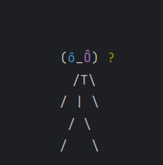

FRONT vs BACK
História
Em um canto esquecido de Cibercity, conhecido apenas como o Porão do HD, os stacks de programação lutam por supremacia.
Este lugar sombrio é habitado por dados obsoletos e programas desatualizados, onde três linguagens icônicas se destacam:
Javoso, o veterano de Java; Reactero, o moderno e ágil framework JavaScript; e Portugolino, o versátil compilador poliglota.
Suas batalhas constantes ameaçam destruir o frágil equilíbrio do Porão, onde o vencedor é um mistério para todos!
Personagens
| Javoso |  |
| Reactero |  |
| Portugol |  |
Inscrição para o Teste Beta!
Receba a versão beta do jogo, basta apenas inserir as informações abaixo!
Making Off
Descubra os Bastidores do Nosso Jogo!
Explore o processo criativo por trás do jogo que coloca Javoso, Reactero e Portugolino em uma batalha digital épica!
Não perca essa oportunidade única de ver como o mundo do desenvolvimento de jogos e programação se fundem em uma experiência emocionante!